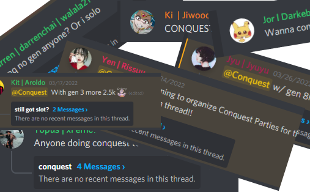

Conquest conquest, everyone's talking about conquest, but what is it? Let's find out.

Conquest is a Guild Nest that is ran together by other fellow guild members to deal as much damage as possible in 3 minutes to 1 of the many bosses. The highest damage out of all your runs will then be calculated to the Conquest leaderboard in the Guilds tab, and the total amount added up.